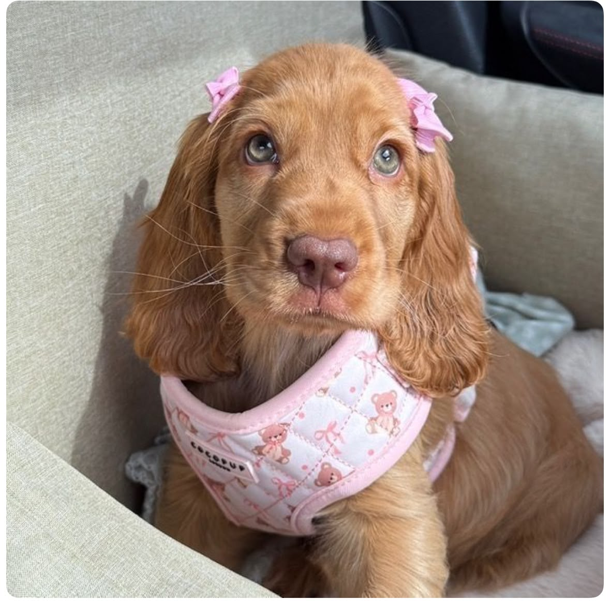
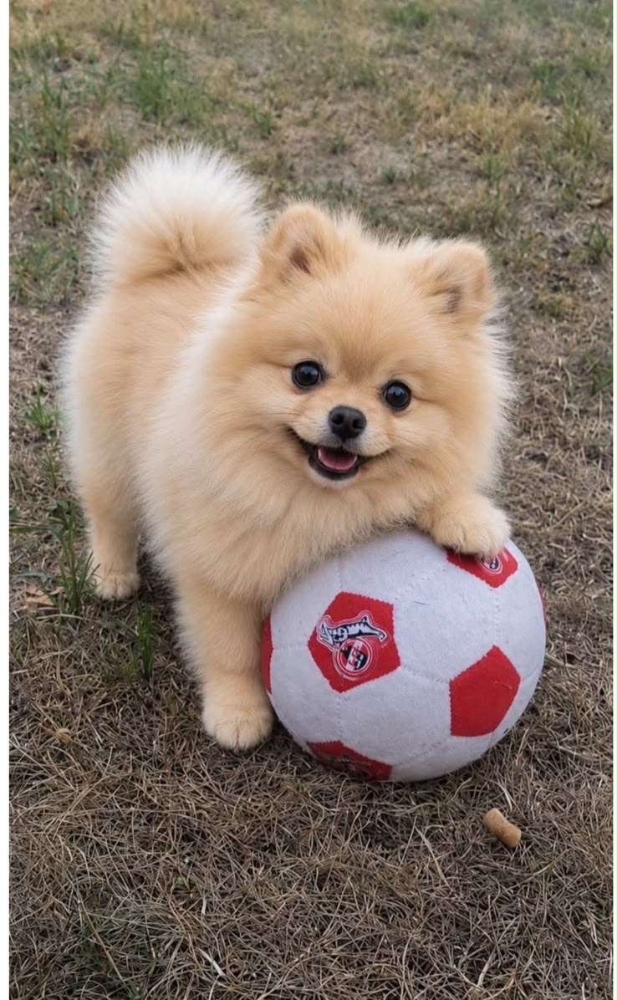
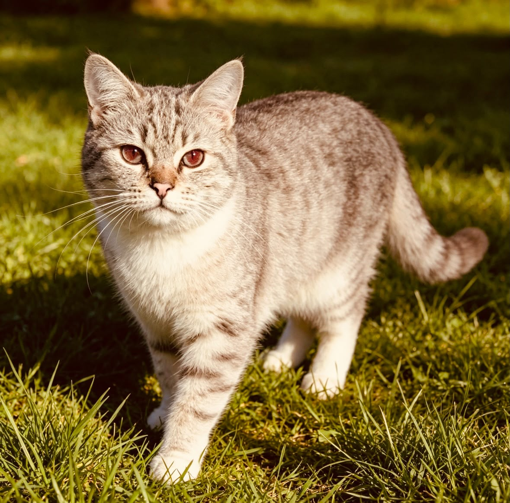

01
Adopta No Compres + EcoHogar
Conectar perros rescatados con adoptantes, promoviendo una integración ambientalmente responsable.
- Catálogo de Peludos: Fichas con datos clave.
- Test de Compatibilidad: Perro ideal según tu espacio.
Estrategias y Propuestas Integrales
Soluciones sostenibles para el bienestar animal y la cultura del reciclaje
Conectar perros rescatados con adoptantes, promoviendo una integración ambientalmente responsable.

Concienciar sobre la esterilización y recaudar insumos mediante reciclaje comunitario.

Reducir el desecho textil y de plástico transformándolo en productos seguros para mascotas.

Coordinar brigadas comunitarias para el rescate temporal y traslado seguro de perritos.